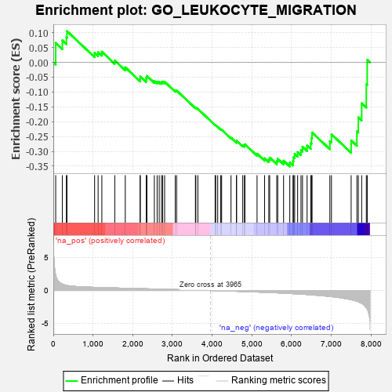
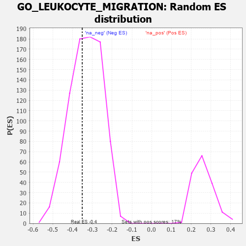

| | | Dataset | 7d |
| Phenotype | NoPhenotypeAvailable |
| Upregulated in class | na_neg |
| GeneSet | GO_LEUKOCYTE_MIGRATION |
| Enrichment Score (ES) | -0.35096613 |
| Normalized Enrichment Score (NES) | -1.0606915 |
| Nominal p-value | 0.4 |
| FDR q-value | 0.7909741 |
| FWER p-Value | 1.0 |
Table: GSEA Results Summary

Fig 1: Enrichment plot: GO_LEUKOCYTE_MIGRATION
Profile of the Running ES Score & Positions of GeneSet Members on the Rank Ordered List
| PROBE | GENE SYMBOL | GENE_TITLE | RANK IN GENE LIST | RANK METRIC SCORE | RUNNING ES | CORE ENRICHMENT | | 1 | RAC2 | | | 60 | 2.442 | 0.0656 | No |
| 2 | RHOH | | | 228 | 0.987 | 0.0740 | No |
| 3 | NUP85 | | | 329 | 0.772 | 0.0845 | No |
| 4 | DAPK2 | | | 343 | 0.754 | 0.1054 | No |
| 5 | AKT1 | | | 1040 | 0.476 | 0.0317 | No |
| 6 | SRC | | | 1128 | 0.459 | 0.0344 | No |
| 7 | PPIL2 | | | 1222 | 0.443 | 0.0359 | No |
| 8 | SOS1 | | | 1547 | 0.384 | 0.0064 | No |
| 9 | ABR | | | 1812 | 0.335 | -0.0169 | No |
| 10 | SYK | | | 2186 | 0.278 | -0.0557 | No |
| 11 | C1QBP | | | 2189 | 0.278 | -0.0477 | No |
| 12 | ANO6 | | | 2339 | 0.255 | -0.0589 | No |
| 13 | DOCK8 | | | 2341 | 0.254 | -0.0514 | No |
| 14 | MIF | | | 2357 | 0.252 | -0.0457 | No |
| 15 | SRP54 | | | 2544 | 0.220 | -0.0626 | No |
| 16 | VAV3 | | | 2614 | 0.210 | -0.0650 | No |
| 17 | GRB14 | | | 2666 | 0.204 | -0.0654 | No |
| 18 | SLIT2 | | | 2724 | 0.195 | -0.0668 | No |
| 19 | PPIA | | | 2754 | 0.190 | -0.0647 | No |
| 20 | FER | | | 2803 | 0.183 | -0.0653 | No |
| 21 | PROS1 | | | 3070 | 0.141 | -0.0947 | No |
| 22 | AIMP1 | | | 3105 | 0.136 | -0.0950 | No |
| 23 | GPR18 | | | 3578 | 0.063 | -0.1527 | No |
| 24 | MAPK3 | | | 3589 | 0.062 | -0.1521 | No |
| 25 | SBDS | | | 3640 | 0.053 | -0.1569 | No |
| 26 | CSF1 | | | 4074 | -0.019 | -0.2110 | No |
| 27 | PDE4B | | | 4089 | -0.022 | -0.2121 | No |
| 28 | CRK | | | 4139 | -0.031 | -0.2174 | No |
| 29 | GBF1 | | | 4215 | -0.044 | -0.2256 | No |
| 30 | GPC1 | | | 4238 | -0.048 | -0.2269 | No |
| 31 | EPS8 | | | 4474 | -0.088 | -0.2540 | No |
| 32 | ADTRP | | | 4612 | -0.120 | -0.2677 | No |
| 33 | GATA3 | | | 4614 | -0.120 | -0.2642 | No |
| 34 | PLCG1 | | | 4770 | -0.151 | -0.2793 | No |
| 35 | P2RX4 | | | 4813 | -0.161 | -0.2797 | No |
| 36 | WDR1 | | | 4824 | -0.163 | -0.2761 | No |
| 37 | STK10 | | | 5130 | -0.233 | -0.3077 | No |
| 38 | CD9 | | | 5319 | -0.277 | -0.3232 | No |
| 39 | GCNT1 | | | 5426 | -0.301 | -0.3276 | No |
| 40 | LYST | | | 5448 | -0.307 | -0.3211 | No |
| 41 | ROR2 | | | 5626 | -0.353 | -0.3329 | No |
| 42 | WNK1 | | | 5650 | -0.362 | -0.3249 | No |
| 43 | ADA | | | 5798 | -0.405 | -0.3314 | No |
| 44 | CXCR5 | | | 5954 | -0.456 | -0.3373 | Yes |
| 45 | RAC1 | | | 6036 | -0.484 | -0.3331 | Yes |
| 46 | ADD2 | | | 6046 | -0.487 | -0.3196 | Yes |
| 47 | CALR | | | 6077 | -0.499 | -0.3085 | Yes |
| 48 | ROCK1 | | | 6152 | -0.520 | -0.3023 | Yes |
| 49 | CDC42 | | | 6236 | -0.548 | -0.2963 | Yes |
| 50 | STK39 | | | 6274 | -0.563 | -0.2842 | Yes |
| 51 | TRPM4 | | | 6390 | -0.612 | -0.2804 | Yes |
| 52 | DYSF | | | 6481 | -0.654 | -0.2722 | Yes |
| 53 | DPP4 | | | 6501 | -0.663 | -0.2547 | Yes |
| 54 | TRPV4 | | | 6515 | -0.668 | -0.2363 | Yes |
| 55 | DNM1L | | | 6963 | -0.913 | -0.2655 | Yes |
| 56 | CCR2 | | | 7003 | -0.939 | -0.2423 | Yes |
| 57 | PPIB | | | 7499 | -1.396 | -0.2631 | Yes |
| 58 | MCU | | | 7644 | -1.637 | -0.2323 | Yes |
| 59 | TRPM2 | | | 7680 | -1.712 | -0.1854 | Yes |
| 60 | PDE4D | | | 7764 | -1.944 | -0.1377 | Yes |
| 61 | FYN | | | 7881 | -2.622 | -0.0738 | Yes |
| 62 | PLCB1 | | | 7904 | -2.841 | 0.0085 | Yes |
Table: GSEA details [plain text format]

Fig 2: GO_LEUKOCYTE_MIGRATION: Random ES distribution
Gene set null distribution of ES for GO_LEUKOCYTE_MIGRATION